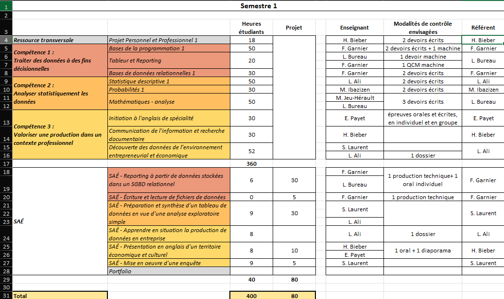

🗄️ SAÉ - Gestion et analyse des notes avec Excel et VBA
Outil dynamique de gestion et d'analyse des notes développé avec Excel et VBA.
La maquette de notre formation est complexe : chaque évaluation possède ses propres coefficients et appartient à un cours, qui possède lui-même ses propres coefficients et appartient à une matière, laquelle est rattachée à un bloc de compétences. De plus, un même projet peut être pris en compte dans plusieurs matières.
Afin de pouvoir calculer nos moyennes, nous avons dû réaliser ce projet avec Excel et VBA, des technologies que nous venions tout juste d'apprendre. Ce projet devait initialement être réalisé seul. Cependant, ayant déjà de l'expérience en programmation, j'ai choisi de travailler de manière autonome.
L'objectif était de pouvoir ajouter et supprimer une note en sélectionnant ses différentes affiliations à l'aide d'un UserForm VBA. Les données devaient être stockées dans le même fichier Excel puis exploitées dynamiquement grâce à Excel et VBA afin de calculer les moyennes ainsi que d'autres indicateurs de notre choix.
Pour cela, nous disposions de la maquette complète de la formation (voir illustration).
Pour ma part, j'ai choisi de conserver la structure de la maquette de formation comme base de travail, en la modifiant le moins possible manuellement.
J'ai créé plusieurs UserForms comportant des cases à cocher et des listes déroulantes alimentées dynamiquement par VBA afin de limiter les risques d'erreur humaine. Tous les champs de saisie (comme la note ou le coefficient interne) intégraient des contrôles de validation.
J'ai également ajouté plusieurs fonctionnalités qui n'étaient pas forcément demandées, telles que la gestion de l'enseignant associé à une note, la gestion du coefficient interne ou encore la possibilité de modifier une note existante.
Une fois saisies, les données étaient enregistrées dans une feuille masquée. Cette feuille était structurée sous forme de colonnes et chaque note correspondait à une ligne, à la manière d'un fichier CSV ou d'une base de données tabulaire.
Le projet comportait également une page d'accueil permettant d'accéder aux différents UserForms ainsi qu'un tableau de bord regroupant les calculs de moyennes et plusieurs graphiques dynamiques.
- Ajout, modification et suppression de notes via des UserForms.
- Calcul dynamique des moyennes et d'autres indicateurs.
- Navigation dynamique à l'aide de boutons.
- Analyse automatique du passage en deuxième année.
L'application repose sur une architecture organisée autour de plusieurs feuilles Excel et modules VBA. Les UserForms permettent la saisie des données, qui sont ensuite stockées dans une feuille masquée servant de base de données.
Les différents modules VBA assurent la validation des saisies, le calcul des indicateurs et la mise à jour automatique des tableaux de bord et graphiques.
Cette organisation permet de séparer la saisie, le stockage et l'exploitation des données tout en conservant un unique fichier Excel.
La charge de travail était importante puisque j'ai réalisé seul un projet qui devait normalement être effectué en binôme.
De plus, nous venions tout juste de découvrir VBA, ce qui a nécessité un temps d'apprentissage conséquent avant de pouvoir exploiter pleinement le langage.
J'ai également manqué de temps pour travailler davantage l'aspect esthétique de l'application, mais je me suis assuré que toutes les fonctionnalités que je jugeais essentielles soient présentes et opérationnelles.

- Découverte et prise en main du langage VBA appliqué à Excel.
- Conception d'UserForms ergonomiques avec listes déroulantes et cases à cocher alimentées dynamiquement.
- Mise en place de contrôles de saisie pour limiter les erreurs.
- Structuration de données dans une feuille masquée à la manière d'une base de données tabulaire.
- Automatisation des calculs de moyennes et d'indicateurs à l'aide de formules imbriquées et de macros.
- Organisation et gestion en autonomie d'un projet à forte charge de travail.
Lors de la restitution des résultats, mesurer l'importance d'expliciter également la démarche suivie.
Parmi les apprentissages critiques (éléments à maîtriser dans la formation, à dimension très académique), je pense que ce projet correspond le mieux à celui cité ci-dessus. En effet, il a fallu réaliser un oral de restitution pour ce projet. Étant donné que nous étions très libres sur la manière de traiter le sujet, qui était par ailleurs complexe et nuancé, pouvoir exprimer sa vision et son cheminement de pensée permet de rendre une production claire.